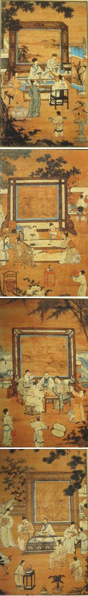

📷 官方教研原图（第三辑）
🔍 点击查看超清大图
01 一、真儒名贤（作者寄托理想之人物）

| 人物与回目 | 性格特点（采分词） | 核心考点情节（中考得分点） |
|---|---|---|
|
杜少卿 第 31-34 回 |
不拘礼法
讲究孝道
乐善好施
|
① 敬奉娄老太爷，娄老病重时亲自将其护送回乡； ② 出资帮助落难的鲍廷玺重新组建戏班； ③ 借宅邸给被革职流落的王知府居住； ④ 为郭孝子远赴四川寻父慷慨解囊资助路费； ⑤ 卖掉自家祖田，送娄老太爷的孙子去做小生意谋生；借钱帮黄大修缮房屋。 |
|
迟衡山 第 33、34 回 |
敢挑战权威
热心善良
懂礼乐有学问
正直专一
|
① 编撰《诗说》，勇敢提出与宋代大儒朱熹截然相反的独立学术观点； ② 强调纯粹学问：认为“做学问就只做学问，讲功名就只讲功名”，绝不可挂羊头卖狗肉； ③ 找庄绍光深入商议泰伯祠当行礼乐，极力倡导并组织策划了名垂青史的“泰伯祠大祭”； ④ 极力反对堪舆迷信，发表对“葬位”的科学理性看法，绝不听信发福发贵邪说。 |
|
庄绍光 第 34、35 回 |
恬适淡泊
不屈权贵
不逐名利
仗义善良
|
① 声名满天下时却紧闭柴门著书立说，不妄交一人； ② 婉言谢绝朝中权贵的征辟与提拔； ③ 自掏银子安葬露宿街头不幸去世的贫困老汉与老妇人； ④ 为躲避庸俗乡绅的频繁拜访，毅然举家搬迁到玄武湖中幽居； ⑤ 亲笔托信到京城托人营救，最终促成卢信侯平安获释。 |
|
虞育德 第 36、37 回 |
忠厚善良
淡泊名利
知书达礼
质朴高雅
|
① 救助跳水轻生的贫寒年轻人，慷慨赠送银两帮其买棺木安葬老父； ② 参加考核如实据报真实年岁，虽只授闲职却怡然自得、满心欢喜； ③ 门生提议为他举办盛大寿宴收受重礼，他坚决严词谢绝； ④ 与涉嫌赌博的监生同吃同住，深入核实为其辩冤昭雪； ⑤ 暗中为作弊的秀才掩饰过失，事后绝口不提、不居其功； ⑥ 全力协助郭孝子入川万里寻父。 |
02 二、侠士与市井奇人

| 人物与回目 | 性格特点（采分词） | 核心考点情节（中考得分点） |
|---|---|---|
|
郭孝子 (郭力) 第 37、38 回 |
至孝纯善
坚毅隐忍
经历奇特
|
① 二十年间踏遍全国万里寻父，途中遇到猛虎与独角兽（黑丑），屡遭奇险而初心不改； ② 途中识破假扮吊死鬼盗财的骗子夫妇，不仅不惩治反而好心传授木耐武艺； ③ 万里找到父亲出家的竹山庵，却被出家父亲狠心拒认闭门不纳；郭孝子便在附近挑土打柴做苦力，默默赚取微薄银钱供养生父。 |
|
萧云仙 第 39、40 回 |
仗义行侠
精忠报国
孝顺至诚
|
① 在成都峨眉山上打瞎横行乡里的恶霸赵大双眼，挺身解救受难老僧； ② 投军报效国家，智勇双全与木耐一同平定叛乱； ③ 历时四年修筑坚固城防，在城外兴修水利、兴办义学惠及万民； ④ 因父亲年事已高曾不忍远赴边塞；后被朝廷革职还乡，跪在老父膝下痛哭悔歉。 |
|
凤四老爹 第 50-52 回 |
身怀绝技
有勇有谋
乐于助人
不图回报
|
① 巧妙让假冒官衔的万中书由假变真，临危不乱，亲自出庭勇试官刑； ② 乘船时挺身而出，帮助同船落难之人追讨被盗贼偷走的盘缠银两； ③ 凭借高强武艺，硬生生帮陈正公追回被江湖骗子毛二胡子诈骗的上千两巨银。 |
|
沈琼枝 第 40、41 回 |
自尊自强
大胆泼辣
不攀权贵
|
① 识破徽州盐商宋为富骗婚将其纳为妾室的阴谋，决不屈从做妾，毅然勇敢抗婚逃婚； ② 孤身逃至南京城，在钞库街悬牌开寓，自食其力卖诗卖刺绣为生，名动金陵； ③ 痛斥市井无赖恶少，怒打索要高额船费、作威作福的官差，是全书独树一帜的奇女子！ |
03 三、第55回市井四大奇人（首尾呼应王冕）
季遐年独绝：写字
写得一手绝世好字，傲骨铮铮不慕荣利。高兴时一文不收赠字，不顺心哪怕送千两黄金也休想求得一笔。曾当面怒斥前来逼字的御史之孙。
王太独绝：下棋
棋艺冠绝天下。平日靠卖火纸筒低调糊口度日，深藏不露，曾以民间布衣身份轻松横扫京城国手名宿。
盖宽独绝：画画
画得一手极品好画。开茶馆营生，为人忠厚大度，常慷慨资助贫困街坊；晚年家道中落穷困潦倒，却坚决不向曾经受助之人张口求报。
荆元独绝：弹琴
弹得一手旷世好古琴。平日以做裁缝手艺自食其力，做完衣服便闭门操琴自娱，诸事由心由己，心境快活逍遥，真正达到“大隐隐于市”。
04 四、第 31-46 回与尾声思想主旨
🌟 教研考评要点：
31-46 回中，这些真名士无视功名利禄，有意避开科举制度，希望能够为国家、人民做些实事，挽救不良的社会风气。在他们身上，作者吴敬梓寄寓了自己的全部社会理想。
47-54 回中，作者深刻剖析八股取士制度对社会基层的全面腐蚀，不仅官场腐烂，连民间三对父女（如鲁编修与鲁小姐）也深陷八股牢笼，最终以泰伯祠沦为废墟宣告士人改良理想的破灭，并以 55 回四大市井奇人收束全书，呼应开篇王冕，表明真正的圣贤人格只能遁入市井草莽。